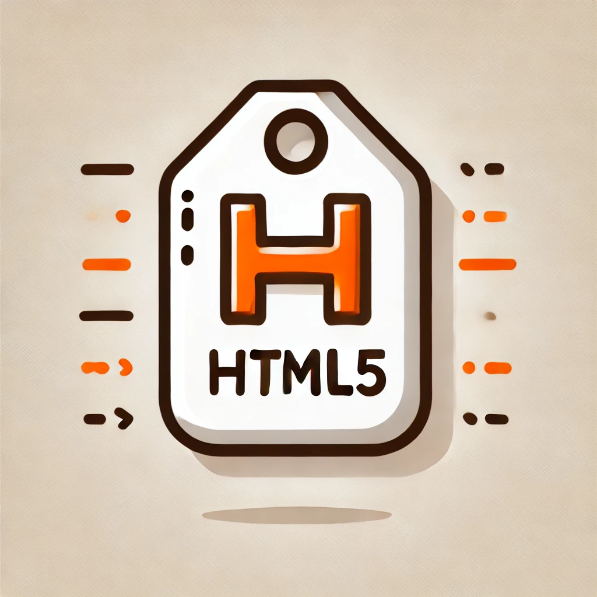

Entrada 1: Comenzando con HTML
He querido realizar la práctica sin el uso de un Framework...
creo que aprenderé más en este punto...
Las siguientes entradas hacen referencia al blog y a la estructura del blog.

Entrada 2: Explorando el mundo de los Tags o Etiquetas HTML
La siguiente lista contiene etiquetas HTML. Algunas de ellas son tradicionales ( o más antiguas)
otras son etiquetas semánticas introducidas en HTML5, quería hacer incapié en la gran evolución en HTML 5
- <html>: Define el documento como HTML.
- <head>: Contiene metadatos y enlaces a recursos, como CSS y scripts.
- <title>: Establece el título de la página en el navegador.
- <body>: Contiene el contenido visible de la página.
- <h1> a <h6>: Definen encabezados, siendo <h1> el más importante y <h6> el menos.
- <p>: Representa un párrafo de texto.
- <a>: Define un enlace o hipervínculo.
- <img>: Inserta una imagen en el documento.
- <ul>: Define una lista no ordenada.
- <ol>: Define una lista ordenada.
- <li>: Representa un elemento de lista dentro de <ul> o <ol>.
- <table>, <tr>, <td>: Definen una tabla, filas y celdas, respectivamente.
- <form>: Crea un formulario para la entrada de datos.
- <input>: Campo de entrada de datos en formularios, con varios tipos (texto, email, etc.).
- <div>: Define una sección o división en la página para organizar el contenido.
- <span>: Contenedor en línea para aplicar estilos específicos a partes de texto.
- <header>, <nav>, <footer>: Elementos estructurales en HTML5 para semántica.
- <section>: Agrupa contenido relacionado en una página.
- <article>: Representa contenido autónomo dentro de una página.
- <aside>: Define contenido secundario o complementario.
- <footer>: Define el pie de página, generalmente con información adicional o enlaces.
Entrada 3: El presente, HTML5 , etiquetas Semánticas
HTML5 es la última versión de HTML...

Ejemplo de la etiqueta Video
Este es un ejemplo de la etiqueta video mostrando controles de reproducción...